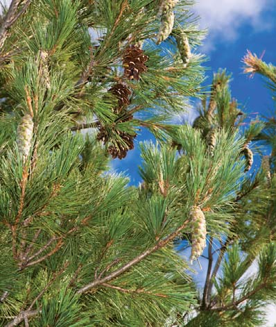
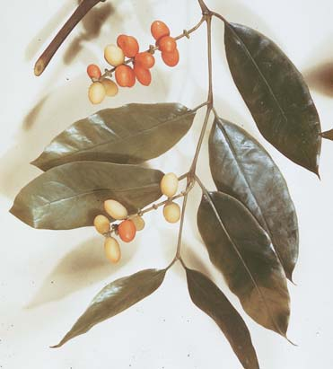

E
582
CONCEPTOS CLAVE
28.1 Las plantas con semillas, que producen esporofi tas jóvenes encerradas dentro de semillas, incluyen gimnospermas y angiospermas. 28.2 Las gimnospermas producen óvulos expuestos que, después de la fecundación, crecen en semillas que por lo general se transportan en conos en las esporofi tas. Las coníferas son las más diversas y numerosas de los cuatro fi los de gimnospermas vivientes. 28.3 Las angiospermas producen óvulos encerrados dentro de carpelos; después de la fecundación, las semillas se desarrollan a partir de los óvulos, y los ovarios de los carpelos se convierten en frutos. Las angiospermas dominan la tierra y presentan gran diversidad tanto en estructuras vegetativas como reproductoras. 28.4 Las gimnospermas evolucionaron a partir de plantas vasculares sin semillas ancestrales; las angiospermas evolucionaron a partir de gimnospermas ancestrales, posiblemente una conífera primitiva.
l capítulo 27 se enfocó en las plantas que se reproducen mediante esporas , células haploides que se dispersan y germinan para producir gametofi tas. Aunque gimnospermas y angiospermas también producen esporas, su principal medio de reproducción y dispersión es por semillas , que representan una importante adaptación para la vida sobre tierra (véase la fotografía). Cada semilla consiste en una esporofi ta embrionaria, tejido nutritivo y un recubrimiento protector. Las semillas se desarrollan desde el ovocito fecundado, el gametofi to femenino, y sus tejidos asociados. Los dos grupos de plantas con semillas, gimnospermas y angiospermas (plantas con fl ores), muestran la mayor complejidad evolutiva de las plantas terrestres y son las plantas dominantes en la mayoría de los ambientes terrestres. Las semillas son reproductivamente superiores a las esporas por varias razones. En primer lugar, una semilla está en una fase más avanzada de su desarrollo antes de liberarse para sobrevivir por cuenta propia: una semilla contiene una planta joven multicelular con raíz y tallo embrionarios, y una o más hojas ya formadas, mientras que una espora es una sola célula. En segundo lugar, una semilla contiene una abundante fuente de alimento. Después de germinar, el alimento almacenado en las semillas nutre la planta embrionaria hasta que se vuelve autosufi ciente. Puesto que una espora es una sola célula, existen pocas reservas alimenticias para la planta que se desarrolla a partir de una espora. La tercera razón es que una semilla está protegida por un tegumento que es muy grueso y duro en algunas plantas como, por ejemplo, el frijol de lima, Phaseolus lunatus. Como las esporas, las semillas viven por períodos extensos a tasas redu-
Vainas de semilla de veza vellosa. Las semillas crecen dentro de cada vaina. La veza vellosa ( Vicia villosa ) es nativa de Europa y Asia pero se ha vuelto natural en Estados Unidos.
28 Plantas con semillas
© Peggy Greb/U.S. Department of Agriculture/Photo Researchers, Inc.
Plantas con semillas 583
Gene Cox/Photo Researchers, Inc.
C Squared Studios/Photodisc/Getty Images
- Fruto angiosperma. Sección longitudinal a través de un fruto de aguacate, que muestra la semilla rodeada por tejido ovárico de la esporofita materna.
Fruto (pared ovárica)
Semilla
- Cono gimnosperma. Sección longitudinal a través de un cono de pino femenino, donde se observan los óvulos (que crecen hasta ser semillas) que se llevan en escamas. Observe la ausencia de pared ovárica.
Escama
Óvulo (futura semilla) rodeada por integumento (futuro tegumento)
Tegumento: tejido esporofita progenitor
Hojas embrionarias
Raíz embrionaria
Embrión: esporofita hija (diploide)
Gametofita haploide (fuente de alimento)
- Semilla gimnosperma. Sección longitudinal a través de una semilla de pino.
FIGURA 28-1 Semillas
cidas de metabolismo y germinan cuando las condiciones se vuelven favorables. Semillas y plantas con semillas están íntimamente conectadas con el desarrollo de la civilización humana. Desde tiempos prehistóricos, los humanos primitivos recolectaron y usaron semillas para su alimentación. Con frecuencia, las semillas contienen una fuente concentrada de proteínas, aceites, carbohidratos y vitaminas, que son nutritivas tanto para los humanos como para las plantas que germinan. Las semillas son fáciles de almacenar (si se mantienen secas), de modo que los humanos pueden recolectarlas durante épocas de abundancia para salir a fl ote en épocas de necesidad. Pocos alimentos se almacenan tan convenientemente o durante tanto tiempo. Aunque las plantas con fl ores producen la mayoría de las semillas que consumen los humanos, las semillas de ciertas gimnospermas (el piñón, por ejemplo) son comestibles.
En este capítulo se presenta la diversidad de las plantas con semillas, tanto gimnospermas como angiospermas, seguido por un examen de lo que se sabe acerca de cómo evolucionaron las plantas con semillas.
28.1 INTRODUCCIÓN A LAS PLANTAS CON SEMILLAS
OBJETIVO DE APRENDIZAJE
1 Comparar las características de gimnospermas y angiospermas.
Como las briofi tas y las plantas vasculares sin semillas introducidas en el capítulo 27, las plantas con semillas tienen ciclos de vida con alternancia de generaciones ; pasan parte de su vida en la etapa esporofi ta diploide multicelular y parte en la etapa gametofi ta haploide multicelular. La generación esporofi ta es la etapa dominante en las plantas con semillas, y la generación gametofi ta es signifi cativamente reducida en tamaño y por completo dependiente de la generación esporofi ta. A diferencia de briofi tas y helechos, las plantas con semillas no tienen gametofi tas de vida libre. En vez de ello, la gametofi ta femenina está adherida y depende nutricionalmente de la generación esporofi ta. En el capítulo 27 aprendió que algunas plantas vasculares sin semillas son heterosporas. (La fi gura 27-19 muestra un ciclo de vida generalizado para plantas heterosporas). Sin embargo, todas las plantas con semillas son heterosporas y producen dos tipos de esporas: microsporas y megasporas. De hecho, la heterosporia es un requisito para la producción de semillas. Las plantas con semillas producen óvulos , cada uno de los cuales es un megasporangio rodeado por integumentos , capas de tejido esporofi to que encierra al megasporangio. Después de la fecundación, el óvulo evoluciona hasta ser una semilla, y los integumentos crecen en el tegumento ( FIGURA 28-1A ). Los botánicos dividen las plantas con semillas en dos grupos con base en si una pared ovárica rodea o no sus óvulos (un ovario es una estructura que contiene uno o más óvulos). Los dos grupos de plantas con

584 Capítulo 28
ginkgos) y Cycadophyta (las cícadas), son restos evolutivos de grupos que fueron más signifi cativos en el pasado. El cuarto fi lo, Gnetophyta (gnetofi tas), es una colección de algunas plantas poco comunes que comparten ciertos rasgos que no se encuentran en otras gimnospermas; hasta hace poco, se consideraba que las gnetofi tas estaban más cercanamente emparentadas con las plantas con fl ores que con otros clados gimnospermas. Sin embargo, evidencia actual sugiere que las gnetofi tas quizás están más cercanamente relacionadas con las coníferas (vea la fi gura 28-2).
Las coníferas son plantas leñosas que producen semillas en conos
Las coníferas (fi lo Coniferophyta), que incluye pinos, piceas, tsugas y abetos, comprende el grupo más familiar de gimnospermas ( FIGURA
28-3a ). Estas 630 especies de árboles o arbustos leñosos producen adiciones anuales de tejidos secundarios (madera y corteza); no existen coníferas herbáceas (no leñosas). La madera ( xilema secundario ) consiste en traqueidas , que son largas células adelgazadas con surcos a través de los cuales agua y minerales disueltos se mueven de una célula a otra. Muchas coníferas producen resina , una sustancia viscosa, clara o traslúcida, que consiste en varios compuestos orgánicos que pueden proteger la planta del ataque por hongos o insectos. La resina se acumula en conductos resiníferos, cavidades con forma de tubo que se extienden a lo largo de raíces, tallos y hojas. Las células que recubren los conductos resiníferos producen y secretan resina. Por lo general, las coníferas tienen hojas llamadas agujas que son largas, estrechas, duras y coriáceas ( FIGURA 28-3b ). La mayoría de los pinos tienen grupos de dos a cinco agujas, dependiendo de la especie. En algunas coníferas, como en la tuya occidental, las hojas tienen forma de escama y cubren el tallo ( FIGURA 28-3c ). La mayoría de las coníferas son siempre verdes y tienen sus hojas todo el año. Sólo algunos, como la metasecuoya, los alerces y el ciprés calvo, son deciduos y pierden sus agujas al fi nal de cada temporada de crecimiento.
semillas son gimnospermas y angiospermas ( TABLA 28-1 ). La palabra gimnosperma se deriva del griego y signifi ca “semilla desnuda”. Las gimnospermas producen semillas que están totalmente expuestas o se llevan en las escamas de conos ( FIGURA 28-1b ). En otras palabras, una pared ovárica no rodea los óvulos de las gimnospermas. Pino, picea, abeto, tsuga y ginkgo son ejemplos de gimnospermas. El término angiosperma se deriva de la expresión griega que signifi ca “semilla encerrada en una vasija o estuche”. Las angiospermas son plantas con fl ores que producen sus semillas dentro de un fr uto (un ovario maduro) ( FIGURA 28-1c ). En consecuencia, los óvulos de las angiospermas están protegidos. Las plantas con fl ores, que son extremadamente diversas, incluyen maíz avena, lirios acuáticos, cactus, manzanas, uvas, palmeras y ranúnculos. Tanto gimnospermas como plantas con fl ores tienen tejidos vascu lares: xilema , para conducir agua y minerales disueltos (nutrientes inorgánicos), y fl oema , para conducir azúcar disuelta.
Repaso
■ ¿Qué es un óvulo?
■ ¿Cómo difi eren las semillas de gimnospermas y angiospermas?
28.2 GIMNOSPERMAS
OBJETIVOS DE APRENDIZAJE
2 Seguir los pasos en el ciclo de vida de un pino y comparar sus generaciones esporofi ta y gametofi ta. 3 Resumir las características que distinguen las gimnospermas de briofi tas y helechos. 4 Mencionar y describir brevemente los cuatro fi los de gimnospermas.
Las gimnospermas incluyen algunas de las plantas más interesantes. Por ejemplo, una secuoya gigante ( Sequoiadendron giganteum ) conocida como General Sherman, en Sequoia National Park en California, es uno de los organismos más grandes del mundo. Mide 82 m de alto y tiene una circunferencia de 23.7 m medida 1.5 m sobre el nivel del suelo. Otra gimnosperma, una secuoya roja ( Sequoia sempervirens ) apodada “Hyperion”, en honor a un gigante de la mitología griega, posiblemente es el árbol más alto del mundo, y medía 117 m en 2007. Botánicos que usaron análisis de anillos de árbol determinaron que uno de los organismos vivos más antiguos de la Tierra, un pino Pinus longaeva en las White Mountains de California, tiene aproximadamente 5000 años de edad. Por lo general, las gimnospermas se clasifi can en cuatro fi los, que se ramifi can a partir de una sola línea evolutiva ( FIGURA 28-2 ). Con 630 especies, el fi lo más grande de gimnospermas es Coniferophyta, llamada comúnmente conífera . Dos fi los de gimnospermas, Ginkgophyta (los
Comparación de gimnospermas y angiospermas
Característica Gimnospermas
Angiospermas
Hábito de crecimiento
Células conductoras en xilema
Estructuras reproductoras
Transferencia granos polen
Fecundación
Semillas
Material nutritivo
Número de especies
Distribución geográfi ca
Árboles y arbustos leñosos
Traqueida
Conos (comúnmente)
Viento (comúnmente)
Óvulo y espermatozoide ¡ cigoto
Expuestas o presentes en escamas de conos
Gametofi ta femenina
Alrededor de 840
Mundial
Leñosas o herbáceas
Elementos contenedores y traqueidas
Flores
Animales o viento
Doble fecundación: óvulo y espermatozoide ¡ cigoto; dos núcleos polares y espermatozoide ¡ endospermo
Encerradas dentro de fruto derivado a partir de ovario
Endospermo
Más de 300,000
Mundial
TABLA 28-1
Plantas con semillas 585
La mayoría de las coníferas son monoicas : tienen partes reproductoras masculina y femenina separadas, en diferentes posiciones de la misma planta. Estas partes reproductoras por lo común se llevan en estróbilos (comúnmente llamados conos ), y de ahí el nombre de conífera , que signifi ca “que lleva conos”. Las coníferas ocupan áreas extensas, que varían desde el Ártico hasta los trópicos, y son la vegetación dominante en las regiones boscosas de Alaska, Canadá, el norte de Europa y Siberia. Además, son importantes en el hemisferio sur, particularmente en las áreas montañosas húmedas de regiones templadas y tropicales de América del Sur, Australia, Nueva Zelanda y Malasia. El suroeste de China, con más de 60 especies de coníferas, tiene la mayor diversidad regional de especies de coníferas en el mundo. California, Nueva Caledonia (una isla al este de Australia), el sureste de China y Japón también tienen considerable diversidad de especies de coníferas. Ecológicamente, las coníferas brindan alimento y cobijo a animales y otros organismos, y sus raíces mantienen el suelo en su lugar y ayudan a evitar la erosión del suelo. Los humanos usan las coníferas por su madera (como material para construcción y para productos de papel), valor medicinal (como el medicamento anticancerígeno Taxol, que se obtiene del tejo del Pacífi co), trementina y resinas. Por su atractiva apariencia, coníferas como abetos, piceas, pinos y cedros se cultivan para el diseño de paisajes y como árboles y guirnaldas decorativas para celebraciones.
Los pinos representan un ciclo de vida conífero común El género Pinus , con mucho el género más grande en las coníferas, consiste en alrededor de 100 especies. Un pino
Las plantas con semilla incluyen cuatro fi los gimnospermas y un fi lo de plantas con fl ores (angiospermas).
Cícadas
Ginkgos
Coníferas
Gnetofitas
Angiospermas
Evolución de flores
Evolución de semillas
Gimnospermas
Plantas con semillas
Grupo externo: Helechos
FIGURA 28-2 Evolución de gimnospermas y angiospermas Este cladograma muestra una hipótesis actual de las relaciones fi logenéticas entre plantas con semillas existentes, con base en evidencia estructural, comparaciones moleculares y fósiles. Las relaciones entre clados existentes de gimnospermas y angiospermas siguen siendo controvertidas. El orden de los fi los que se muestran aquí puede cambiar conforme análisis futuros ayuden a clarifi car las relaciones.
PUNTO CLAVE
Cícadas
Ginkgos
Coníferas
Gnetofitas
Angiospermas
Gimnospermas
Grupo externo: Helechos
En el pino blanco ( Pinus strobus ), las hojas son largas agujas delgadas que ocurren en grupos de cinco.
En la tuya occidental ( Thuja occidentalis ), las hojas son pequeñas y con forma de escama.
Abeto blanco ( Abies concolor ). Fotografiado en Milford, Pensilvania, en el hogar histórico de Gifford Pinchot, el primer director de guardabosques del Servicio Forestal de Estados Unidos (bajo T. R. Roosevelt).
Michael P. Gadomski/Photo Researchers, Inc.
FIGURA 28-3 Coníferas
586 Capítulo 28
meiosis para formar cuatro microsporas haploides. Luego las microsporas se desarrollan en gametofi tos masculinas extremadamente reducidas. Cada gametofi to masculino inmaduro, también llamada grano de polen , consiste en cuatro células, dos de las cuales, una célula generativa y una célula tubo , están involucradas en la reproducción. Las otras dos células degeneran pronto. Dos grandes sacos de aire en cada grano de polen le brindan fl otabilidad para la diseminación por el viento. Los conos masculinos sueltan granos de polen en grandes cantidades, y las corrientes de viento llevan algunas a los conos femeninos inmaduros. Muchos botánicos consideran que los conos femeninos (también llamados conos de semilla ) son sistemas de ramas modifi cados. Cada escama de cono tiene dos óvulos , o megasporangios , en su superfi cie superior. Dentro de cada megasporangio, la meiosis de un megasporocito , o célula madre de megaspora , produce cuatro megasporas haploides. Una de ellas se divide mitóticamente y crece en el gametofi to femenino, que
es una esporofi ta madura ( FIGURA 28-4 ). El pino es heterosporo y por lo tanto produce microsporas y megasporas en conos separados. Los conos masculinos, por lo general de 1 cm o menos de longitud, son más pequeños que los conos femeninos y usualmente se producen en las ramas inferiores cada primavera ( FIGURA 28-5 ). Los más familiares conos femeninos leñosos, que están en el árbol todo el año, por lo general se encuentran en las ramas superiores del árbol y tienen semillas después de la reproducción. Los conos femeninos varían considerablemente en tamaño. El pino de azúcar, P. lambertiana que crece en California produce los conos femeninos más grandes del mundo, que alcanzan longitudes de 60 cm. Cada cono femenino, también llamado cono de polen , consiste en esporofi los , escamas parecidas a hojas que tienen esporangios en la parte inferior. En la base de cada esporofi lo hay dos microsporangios , que contienen numerosos microsporocitos , también llamados células madre de microsporas . En la fi gura 28-4, cada microsporocito experimenta
Las gimnospermas, como todas las plantas con semillas, son heterosporas.
Meiosis GENERACIÓN GAMETOFITA HAPLOIDE ( n )
GENERACIÓN ESPOROFITA DIPLOIDE (2 n )
Fecundación
Cono masculino
Escama de un cono masculino
Escama de un cono femenino
Cada escama tiene dos microsporangios
Cada escama porta dos óvulos (megasporangios)
Microsporangio
Microsporas, cada una de las cuales se desarrolla hasta convertirse en un grano de polen
Óvulo
Gametofito femenina
Megasporangio
Megaspora Tubo de polen en crecimiento
Cigoto
Segundo núcleo de espermatozoide
Tubo de polen
El núcleo del espermatozoide se une con el núcleo del ovocito
Cono femenino maduro (cono de semilla)
Ala
Dos semillas en la superficie superior de la escama
Tegumento
Embrión
Gametofita femenina (tejido nutritivo)
Plántula recién germinada
Conos masculinos (conos de polen)
Cono femenino inmaduro 5
4 El viento transfiere granos de polen hacia el cono femenino.
5 El tubo de polen transporta espermatozoides, uno de los cuales fecunda el ovocito.
2 Microsporocitos dentro de conos masculinos experimentan meiosis para formar microsporas, cada una de las cuales se desarrolla hasta convertirse en un grano de polen. 3 Megasporocitos dentro de los conos femeninos experimentan meiosis para formar megasporas.
1 El pino es una esporofita madura.
6 El embrión en la semilla se desarrolla a partir del cigoto.
FIGURA 28-4 Animada Ciclo de vida del pino Una gran ventaja de las gimnospermas sobre las plantas vasculares sin semillas es la producción de granos de polen que transporta el viento.
PUNTO CLAVE


Plantas con semillas 587
permatozoides. En vez de ello, corrientes de aire transportan los granos de polen del pino hacia los conos femeninos, y los espermatozoides no fl agelados se mueven a través de un tubo de polen hacia el ovocito. El pino y otras coníferas son plantas cuya reproducción está completamente adaptada para la vida en la tierra.
Las cícadas tienen conos de semillas y hojas compuestas
Las cícadas (fi lo Cycadophyta) fueron muy importantes durante el período Triásico, que comenzó hace aproximadamente 251 millones de años (ma) y en ocasiones se le conoce como la “era de las cícadas”. La mayoría de las especies ahora están extintas, y las pocas cícadas sobrevivientes, alrededor de 140 especies, son plantas tropicales y subtropicales con gruesos tallos parecidos a troncos y hojas compuestas que recuerdan a las de las palmeras o helechos arbóreos ( FIGURA 28-6 ). Muchas cícadas están en peligro de extinción, principalmente porque son populares como ornamentos y se recolectan de la naturaleza para su venta a coleccionistas. En Estados Unidos, las cícadas pueden encontrarse en Florida, Texas y California. La reproducción de las cícadas es similar a la de los pinos, excepto que las cícadas son diódicas y por lo tanto tienen conos de semilla en las plantas femeninas y conos de polen en las plantas masculinas. La estructura de sus semillas es más parecida a la de las primeras semillas encontradas en el registro fósil. Las cícadas también conservaron espermatozoides mótiles, cada uno de los cuales tiene muchos fl agelos con forma de cabellos. Los espermatozoides mótiles son un vestigio retenido de los ancestros de las cícadas, cuyos espermatozoides nadaban de los anteridios hacia los arquegonios. En las cícadas, los insectos especializados (casi exclusivamente escarabajos) transportan granos de polen hacia las plantas femeninas y sus conos. Después de la transferencia hacia el cono femenino, el grano de polen germina y produce un tubo de polen. Los espermatozoides se liberan en este tubo y nadan hacia el ovocito.
Ginkgo biloba es la única especie viva en este fi lo
Ginkgo (fi lo Ginkgophyta) está representado por una sola especie existente (viva), el Ginkgo biloba ( FIGURA 28-7 ). Es nativa del este de China y crece en la naturaleza sólo en dos ubicaciones, los humanos la han cultivado durante siglos en China y Japón por sus semillas comestibles. Ginkgo es el género (y especie) más antiguo de los árboles existentes. Se han descubierto ginkgos fósiles de 200 millones de años de antigüedad que son sorprendentemente similares a los ginkgos modernos. Con frecuencia, en la actualidad se plantan ginkgos en América del Norte y Europa, particularmente en parques y a lo largo de las calles de las ciudades, porque es robusto y un poco resistente a la contaminación del aire. Sus hojas son deciduas y adquieren un hermoso amarillo antes de caer en el otoño. Como las cícadas, ginkgo es diódico, con árboles masculino y femenino separados. Tiene espermatozoides fl agelados, un vestigio evolutivo que no se requiere porque ginkgo produce granos de polen que
produce un ovocito dentro de cada uno de muchos arquegonios. Las otras tres megasporas no son funcionales y degeneran pronto. Cuando el óvulo está listo para recibir polen, produce una gota pegajosa en la abertura donde aterriza el grano de polen. La polinización , la transferencia de polen a los conos femeninos, ocurre en la primavera durante una semana o 10 días, después de los cuales los conos de polen palidecen y caen del árbol. Uno de los muchos granos de polen que se adhieren al cono femenino pegajoso produce un tubo de polen , una excrecencia que digiere a través del megasporangio hasta el ovocito dentro del arquegonio. El grano de polen germinado con su tubo de polen es el gametofi to masculino maduro. A fi nal de cuentas, se forman dos espermatozoides no mótiles (no fl agelados) dentro del grano de polen germinado. Cuando llega al gametofi to femenino, el tubo de polen descarga los dos espermatozoides cerca del ovocito. Uno de estos espermatozoides se fusiona con el ovocito, en el proceso de fecundación , para formar un cigoto, u ovocito fecundado, que posteriormente crece hasta un embrión de pino joven en la semilla. El otro espermatozoide degenera. El embrión en desarrollo consiste en una raíz y un brote embrionarios con cotiledones especiales (hojas embrionarias). El tejido gametofi to femenino haploide rodea al embrión y se convierte en el tejido nutritivo en la semilla de pino madura. Un duro tegumento protector derivado de los integumentos encierra al embrión y al tejido nutritivo. El tegumento forma una delgada ala como de papel en un extremo, que permite su dispersión por corrientes de aire. Algunas semillas permanecen dentro de los conos femeninos durante varios años antes de poder soltarse. En el ciclo de vida del pino, la generación esporofi ta es dominante, y la generación gametofi ta está restringida en tamaño a estructuras microscópicas en los conos. Aunque la gametofi ta femenina produce arquegonios, el gametofi to masculino es tan reducido que no produce anteridios. La generación gametofi ta en los pinos, como en todas las plantas con semilla, depende totalmente de la generación esporofi ta para su nutrición. Una gran adaptación en el ciclo de vida del pino es la eliminación de la necesidad de agua externa como medio de transporte para los es-
© Igor Sokolov/Shutterstock
Manfred Kage/Peter Arnold, Inc.
Granos de polen (gametofitos masculinos inmaduros)
50 μ m
FIGURA 28-5 Conos masculino y femenino en Pinus contorta Los conos femeninos leñosos maduros ( arriba ) están abiertos para soltar sus semillas. Grupos de conos masculinos ( abajo ) producen gran cantidad de granos de polen en la primavera. ( Inserto ) Cada grano de polen se desarrolla a partir de una microspora.

588 Capítulo 28
se transportan con el viento. Las semillas de ginkgo están completamente expuestas, en lugar de contenidas dentro de conos. Los árboles masculinos son los que se plantan de manera común, porque los árboles femeninos portan semillas cuyas carnosas cubiertas exteriores desprenden un desagradable olor que huele como mantequilla rancia. En China y Japón, donde las personas comen las semillas, los árboles femeninos son más comunes. Ginkgo ha sido una importante planta medicinal durante siglos y todavía en la actualidad es un remedio herbolario común. Extractos de las hojas pueden mejorar el funcionamiento neurológico al aumentar el fl ujo sanguíneo hacia el cerebro, aunque muchos estudios recientes concluyeron que ginkgo no mejora la memoria en los ancianos.
Las gnetofi tas incluyen tres géneros raros
Las gnetofi tas (fi lo Gnetophyta) consiste en aproximadamente 70 especies en tres géneros diversos y oscuros ( Gnetum , Ephedra y Welwitschia ). Las gnetofi tas comparten ciertas características que las hacen únicas entre las gimnospermas. Por ejemplo, las gnetofi tas tienen células conductoras de agua más efi ciente, llamadas elementos vasculares , en su xilema (vea el capítulo 33). Las plantas con fl ores también tienen elementos vasculares en su xilema, pero en las gimnospermas sólo los tienen las gnetofi tas. Además, los grupos de conos que producen algunas gnetofi tas parecen grupos de fl ores, y ciertos detalles en su ciclo de vida recuerdan al de las plantas con fl ores. A pesar de estas semejanzas, la mayoría de los botánicos consideran ahora que las gnetofi tas representan diversidad evolutiva en las gimnospermas y
Una planta femenina de arrurruz de la Florida ( Zamia integrifolia ) produce conos de semillas. Esta planta es la única cícada nativa de Estados Unidos. Como Zamia , la mayoría de las cícadas son plantas cortas, con menos de 2 m de alto.
Esta cícada femenina ( Encephalartos transvenosus ) en Sudáfrica tiene un tronco que alcanza una altura de alrededor de 9 m y parece una palmera. Observe sus inmensos conos de semilla que alcanzan hasta 0.8 m de largo.
Walter H. Hodge/Peter Arnold, Inc.
Estróbilo femenino (cono de semilla)
FIGURA 28-6 Cícadas
Acercamiento de una rama de un ginkgo femenino, que muestra las semillas expuestas y las distintivas hojas con forma de abanico.
Ginkgo ( Ginkgo biloba ) en un jardín formal en el norte de Inglaterra.
Marion Lobstein
Joseph Malcolm Smith/Photo Researchers, Inc.
FIGURA 28-7 Ginkgo
Plantas con semillas 589
fl ores vienen en una gran variedad de tamaños y formas, desde las violetas herbáceas hasta los grandes eucaliptos. Algunas plantas con fl ores (tulipanes y rosas, por ejemplo) tienen grandes fl ores visibles; otras, como los céspedes y robles, producen pequeñas fl ores poco visibles. Las plantas con fl ores son plantas vasculares que se reproducen sexualmente mediante la formación de fl ores y, después de un proceso único de fecundación doble, semillas dentro de frutos. El fruto protege las semillas en desarrollo y con frecuencia ayuda a su dispersión (vea el capítulo 37). Las plantas con fl ores tienen efi cientes células conductoras de agua llamadas elementos vasculares en su xilema y efi cientes células conductoras de azúcar llamadas elementos de tubo criboso en su fl oema (vea el capítulo 33). Las plantas con fl ores son extremadamente importantes para los humanos, porque la supervivencia como especie literalmente depende
no están en una línea directa con las plantas con fl ores (vea la fi gura 28-2). El género Gnetum contiene enredaderas, arbustos y árboles tropicales con hojas anchas ( FIGURA 28-8a ). Las especies en el género Ephedra incluyen muchos arbustos y enredaderas que crecen en desiertos y otras regiones templadas y tropicales secas. Algunas especies de Ephedra parecen colas de caballo en que tienen tallos verdes articulados con hojas pequeñas ( FIGURA
28-8b ). Llamada comúnmente abeto articulado ( joint fi r en inglés), Ephedra se ha usado en medicina durante siglos. Una Ephedra asiática es la fuente de la efedrina, que estimula el corazón y eleva la presión arterial. En una época, la efedrina se vendía comúnmente en los mostradores como medicamento para control del peso y reforzador energético herbal; muchas muertes se reportaron por el uso crónico o la sobredosis de productos que contenían efedrina, así que su uso se restringió. El tercer género gnetofi to, Welwitschia , contiene una sola especie que se encuentra en desiertos del suroeste africano ( FIGURA 28-8c ). La mayor parte del cuerpo de Welwitschia , una raíz principal larga, crece bajo tierra. Su tallo corto y ancho, forma un disco poco profundo, de hasta 0.9 m de diámetro, a partir del cual se extienden dos hojas con forma de listón. Estas dos hojas siguen creciendo desde el tallo a lo largo de la vida de la planta, pero sus extremos usualmente se rompen y desgarran por el viento, lo que brinda la apariencia de muchas hojas. Cada hoja crece hasta más o menos 2 m de largo. Cuando Welwitschia se reproduce, se forman conos alrededor del borde de su tallo con forma de disco.
Repaso
■ ¿Cuál es la generación dominante en el ciclo de vida del pino? ¿Cómo ocurre la polinización en gimnospermas?
■ ¿Qué características distinguen las gimnospermas de otras plantas?
■ ¿Cuáles son los cuatro grupos de gimnospermas?
■ ¿Qué características distinguen a las cícadas de los ginkgos? ¿De las gnetofi tas?
28.3 PLANTAS CON FLORES
OBJETIVOS DE APRENDIZAJE
5 Resumir las características que distinguen a las plantas con fl ores de otras plantas. 6 Explicar brevemente el ciclo de vida de una planta con fl ores y describir la fecundación doble. 7 Contrastar monocotiledóneas y eudicotiledóneas, las dos clases más grandes de plantas con fl ores. 8 Discutir las adaptaciones evolutivas de las plantas con fl ores.
Las plantas con fl ores , o angiospermas (fi lo Anthophyta), son las plantas más exitosas de la actualidad, e incluso sobrepasan a las gimnospermas en importancia. Se han adaptado a casi todos los hábitats y, con al menos 300,000 especies, son las plantas dominantes de la Tierra. Las plantas con
Dr. John D. Cunningham/Visuals Unlimited, Inc.
David Cavagnaro
Robert and Linda Mitchell
Las hojas de Gnetum gnemon se parecen a las de las plantas con flores. Observe las semillas expuestas. La especie es nativa del sur de Asia y las Maldivas.
Un abeto articulado ( Ephedra ) masculino tiene conos de polen agrupados en los nodos. En el siglo XIX , los pioneros europeos usaban la especie nativa del suroeste estadounidense para preparar una bebida: el té mormón.
Welwitschia mirabilis es nativa de los desiertos en el suroeste africano. Sobrevive con las neblinas cargadas de humedad que derivan tierra adentro desde el océano. Fotografiada en el desierto de Namib, Namibia.
FIGURA 28-8 Gnetofi tas

590 Capítulo 28
las fl ores monocotiledóneas por lo general tienen tres partes ( FIGURA
28-9a ). Por ejemplo, una fl or puede tener tres sépalos, tres pétalos, seis estambres y un pistilo compuesto que consiste en tres carpelos fusionados (estas partes fl orales se estudiarán dentro de poco). Las semillas de las monocotiledóneas tienen un solo cotiledón , u hoja de semilla embrionaria; en la semilla madura por lo general se presenta endospermo , un tejido nutritivo. Las eudicotiledóneas incluyen robles, rosas, mostazas, cactus, moras y girasoles. Las eudicotiledóneas son herbáceas (como la planta de tomate) o leñosas (como los nogales). Sus hojas pueden variar en su forma pero comúnmente son más anchas que las hojas de las monocotiledóneas, con nervios en forma de red (fi namente ramifi cados). Las partes de la fl or por lo general son cuatro, cinco o múltiplos de éstos ( FIGURA 28-9b ). En las semillas eudicotiledóneas hay dos cotiledones y el endospermo por lo general está ausente en la semilla madura, que absorbieron los dos cotiledones durante el crecimiento de la semilla.
de ellas. Todos los principales cultivos alimenticios son plantas con fl ores; los ejemplos incluyen arroz, trigo, maíz, papas, tomates, frijoles, manzanas y cítricos. Las plantas con fl ores leñosas, como roble, cereza y nuez, brindan valiosa madera. Las plantas con fl ores proporcionan fi bras, como algodón y lino, y medicinas, como digitalina y codeína. Productos tan diversos como caucho, tabaco, café, chocolate, vino y aceites aromáticos para perfumes provienen de plantas con fl ores. La botánica económica es la subdisciplina de la botánica que trata con plantas de importancia económica.
Monocotiledóneas y eudicotiledóneas son las dos clases más grandes de plantas con fl ores
El fi lo Anthophyta se divide en muchas clases, con sólo algunos miembros en cada uno, y dos clases muy grandes: las monocotiledóneas (clase Monocotyledones) y las eudicotiledóneas (clase Eudicotyledones). Las clases más pequeñas se estudiarán más adelante en este capítulo, en el contexto de su signifi cado evolutivo. Por el momento, la discusión de las plantas con fl ores se restringe a las monocotiledóneas y eudicotiledóneas, que en conjunto representan alrededor del 97% de todas las especies de plantas con fl ores. Las eudicotiledóneas son más diversas e incluyen muchas más especies (al menos 200,000) que las monocotiledóneas (al menos 90,000). La TABLA 28-2 presenta una comparación de algunas de las características generales de las dos clases. Las monocotiledóneas incluyen palmeras, céspedes, orquídeas, irises, cebollas y lirios. Las monocotiledóneas son principalmente plantas herbáceas con largas hojas estrechas que tienen venas paralelas (los principales nervios foliares corren paralelos entre ellos). Las partes de
Características distintivas de monocotiledóneas y eudicotiledóneas
Característica Monocotiledóneas Eudicotiledóneas
Partes fl orales Usualmente en tres Usualmente en cuatros o cincos
Granos de polen Un surco o poro Tres surcos o poros
Nervadura foliar Usualmente paralela Usualmente en red
Grupos vasculares en Usualmente dispersos o Ordenados en círculo (anillo) sección transversal de tallo arreglo más complejo
Raíces Sistema de raíz fi brosa Sistema de raíz principal
Semillas Embrión con un cotiledón Embrión con dos cotiledones
Crecimiento secundario Ausente Con frecuencia presente (madera y corteza)
TABLA 28-2
Monocotiledónea. Trillium erectum , como la mayoría de las monocotiledóneas, tiene partes florales en tres. Observe los tres sépalos verdes, tres pétalos rojos, seis estambres y tres estigmas (el pistilo compuesto consiste en tres carpelos fusionados).
Eudicotiledónea. La mayoría de las eudicotiledóneas, como esta Tacitus , tiene partes florales en cuatros o cincos. Observe los cinco pétalos, 10 estambres y cinco pistilos separados. También están presentes cinco sépalos, pero apenas son visibles contra el fondo.
Cícadas
Ginkgos
Coníferas
Gnetofitas
Angiospermas
Grupo externo: Helechos
John Gerlach/Tom Stack & Associates
© Vgumenuk/Dreamstime
FIGURA 28-9 Plantas con fl ores
Plantas con semillas 591
Las cuatro partes fl orales son importantes en el proceso reproductivo, pero sólo los estambres (los órganos “masculinos”) y los carpelos (los órganos “femeninos”) producen gametos. Una fl or que tiene cuatro partes está completa , mientras que una fl or incompleta carece de una o más de estas cuatro partes. Una fl or con estambres y carpelos es perfecta, mientras que una fl or imperfecta tiene estambres o carpelos pero no ambos. Los sépalos , que constituyen los círculos más bajo y más exterior en un brote fl oral, tienen apariencia de hoja y siempre son verdes ( FI-
GURA 28-11a ). Los sépalos cubren y protegen las otras partes fl orales cuando la fl or es un capullo. Conforme la fl or abre, los sépalos se pliegan para revelar los pétalos más visibles. El término colectivo para todos los sépalos de una fl or es cáliz . El círculo justo arriba de los sépalos consiste en pétalos , que son anchos, planos y delgados (como sépalos y hojas) pero varían en forma y frecuentemente tienen brillantes colores. Los pétalos atraen polinizadores animales hacia la fl or (vea el capítulo 37). En ocasiones los pétalos se fusionan para formar un tubo (como en las fl ores la madreselva trompeta) u otra forma fl oral (como en las Antirrhinum “boca de dragón”, cuyos pétalos forman dos labios). Los pétalos de una fl or se conocen de manera colectiva como corola . Justo adentro de los pétalos hay un círculo de estambres ( FIGURA
28-11b ). Cada estambre está compuesto de un tallo delgado, llamado fi lamento , y una antera con forma de saco donde ocurre la meiosis para formar microsporas que se transforman en granos de polen. Cada grano de polen produce dos células rodeadas por una gruesa pared exterior. Con el tiempo, una célula se divide para formar dos gametos masculinos,
La reproducción sexual tiene lugar en las fl ores
Las fl ores son brotes reproductores comúnmente compuestos de cuatro partes (sépalos, pétalos, estambres y carpelos) ordenados en espirales (círculos) en el extremo del tallo de una fl or, o pedúnculo ( FIGURA
28-10 ). El pedúnculo puede terminar en una sola fl or o un grupo de fl ores conocido como infl orescencia . La punta del tallo de la fl or que porta las partes de la fl or se conoce como receptáculo .
PISTILO (consiste en uno o más carpelos)
Estigma
Estilo
ESTAMBRE
Antera
Filamento Ovario
Óvulos (cada uno se produce de un ovocito)
Partes florales femeninas Partes florales masculinas
Grano de polen (cada uno producirá dos espermatozoides)
Pétalo
Sépalo
Receptáculo
Pedúnculo
Darwin Dale/Photo Researchers, Inc.
Este corte de una flor de Arabidopsis muestra los detalles de las estructuras florales básicas. Cada flor tiene cuatro sépalos (se muestran dos), cuatro pétalos (se muestran dos), seis estambres y un largo pistilo. Cuatro de los estambres son largos, y dos son cortos (se muestran dos largos y dos cortos). Los granos de polen se desarrollan dentro de sacos en las anteras. En Arabidopsis , el pistilo compuesto consiste en dos carpelos que contienen cada uno numerosos óvulos.
Flor de Arabidopsis thaliana.
FIGURA 28-10 Animada Estructura fl oral
592 Capítulo 28
o espermatozoides, y la otra produce un tubo de polen a través del cual viajan los espermatozoides para llegar al óvulo. En el centro de la mayoría de las fl ores hay uno o más carpelos cerrados, los órganos reproductores “femeninos”. Los carpelos tienen óvulos, que, como recuerda el lector, son estructuras con el potencial de convertirse en semillas. Los carpelos de una fl or están separados o fusionados en una sola estructura. La parte femenina de la fl or también se llama pistilo (vea la fi gura 28-11b). Un pistilo puede consistir en un solo carpelo (un pistilo simple) o un grupo de carpelos fusionados (un pistilo compuesto) ( FIGURA 28-12 ). Por lo general, cada pistilo tiene tres secciones: un estigma , sobre el cual aterriza el grano de polen; un estilo , una estructura con forma de cuello a través de la cual crece el tubo de polen; y un ovario , una estructura alargada que contiene uno o más óvulos. Cada óvulo joven contiene un gametofi to femenino que forma un gameto femenino (un ovocito), dos núcleos polares , y muchas otras células haploides. Después de la fecundación, el óvulo evoluciona hasta convertirse en una semilla; y el ovario, en un fruto.
El ciclo de vida de las plantas con fl ores incluye fecundación doble
Las plantas con fl ores experimentan alternancia de generaciones en las que la generación esporofi ta es más grande y nutricionalmente independiente ( FIGURA 28-13 ). La generación gametofi ta en las plantas con fl ores es microscópica y nutricionalmente dependiente de la esporofi ta. Las plantas con fl ores, como las gimnospermas y algunas otras plantas vasculares, son heterosporas y producen dos tipos de esporas: microsporas y megasporas. La reproducción sexual ocurre en la fl or. Cada óvulo joven dentro de un ovario contiene un megasporocito (célula madre de megaspora) que experimenta meiosis para producir cuatro megasporas haploides. Tres de éstas comúnmente se desintegran, y una se divide en forma mitótica y crece hasta convertirse en un gametofi to femenino maduro, también llamado saco embrionario .
Los sépalos con forma de hoja de una rosa ( Rosa ) encierran y protegen las partes internas de la flor.
La flor de Jeffersonia diphylla tiene ocho estambres amarillos. Observe el pistilo simple con su ovario verde en el centro de la flor.
Estambre
Pistilo
© Theo Fitzhugh/Shutterstock
Marion Lobstein
Pétalos
Sépalos
FIGURA 28-11 Partes de una fl or
FIGURA 28-12 Pistilos simple y compuesto
Pared del ovario
Óvulos
Estigma
Estilo
Estigma
Estilo
Ovario
Ovario
Un carpelo Óvulos
Pared del ovario
Pistilo simple. Este pistilo simple consiste en un solo carpelo.
Pistilo compuesto. Este pistilo compuesto tiene dos carpelos unidos. En la mayoría de las flores con pistil os individuales, los pistilos son compuestos y consisten en dos o más carpelos fusionados.
Plantas con semillas 593
granos de polen al estigma (vea el capítulo 37). Si es compatible con el estigma, el grano de polen germina, y un tubo de polen crece en el estilo y hacia el ovario. El grano de polen germinado, con su tubo de polen, es el gametofi to masculino maduro. A continuación, la célula generativa se divide para formar dos espermatozoides no fl agelados. Los espermatozoides se mueven dentro del tubo de polen y se descargan en el saco embrionario. Ambos espermatozoides están involucrados en la fecundación. Cuando los dos espermatozoides entran al saco embrionario, ambos participan en la fecundación. Un espermatozoide se fusiona con el ovocito y forma un cigoto que crece por mitosis y se transforma hasta ser un embrión multicelular en la semilla. El segundo espermatozoide se fusiona con los dos núcleos polares haploides de la célula central para formar una célula triploide (3 n ) que se divide por mitosis y se desarrolla para ser endospermo , un tejido nutritivo rico en lípidos, proteínas y carbohidratos que alimenta al embrión durante su crecimiento. Este proceso de fecundación, que involucra dos fusiones nucleares separadas, se llama fecundación doble y es, con dos excepciones, único para las plantas con
Los sacos embrionarios en la gran mayoría de las angiospermas contienen siete células con ocho núcleos haploides. Seis de estas células, incluido el ovocito, contienen un solo núcleo cada una, y una célula central tiene dos núcleos, llamados núcleos polares . El ovocito y la pared central con dos núcleos polares están directamente involucrados en la fecundación; las otras cinco células en el saco embrionario en apariencia no tienen papel directo en el proceso de fecundación y se desintegran. Sin embargo, conforme se desintegran las sinérgidas (las dos células que fl anquean al ovocito), liberan químicos que pueden afectar la dirección de crecimiento del tubo de polen. Cada saco de polen, o microsporangio, de la antera contiene numerosos microsporocitos (células madre de microspora), cada una de las cuales experimenta meiosis para formar cuatro microsporas haploides. Toda microspora se desarrolla en un gametofi to masculino maduro, también llamado grano de polen . Los granos de polen son pequeños; cada uno consiste en dos células, la célula tubo y la célula generativa . Las anteras se abren y comienzan a lanzar polen. Varios agentes (incluidos viento, agua, insectos y otros animales polinizadores) transfi eren
Una característica signifi cativa del ciclo de vida de las plantas con fl ores es la fecundación doble, en la que un espermatozoide se une con el ovocito y forma un cigoto; el otro espermatozoide se une con los dos núcleos polares y forma una célula triploide que da origen al endospermo.
Meiosis
GENERACIÓN GAMETOFITA HAPLOIDE ( n )
GENERACIÓN ESPOROFITA DIPLOIDE (2 n )
Tétrada de microsporas
Microspora Grano de polen (gametofito masculino inmaduro)
Desarrollo de un tubo de polen en gametofito masculino maduro
Saco embrionario (gametofito femenino maduro)
Núcleos polares
Tubo de polen
Dos espermatozoides Núcleo ovocito
Endospermo (3 n )
Fruto
Cigoto (2 n )
Fecundación doble
Embrión
Tegumento Endospermo
Semilla
Plántula Antera
Microsporocitos dentro de microsporangios
Ovario Megasporocito Megasporangio (óvulo)
Megaspora
Polinización
4 Cada microspora se desarrolla hasta ser un grano de polen.
2 El megasporocito experimenta meiosis para formar megasporas haploides.
3 Microsporocitos dentro de sacos de antera experimentan meiosis para formar microsporas haploides.
6 El tubo de polen crece a través del tejido femenino para depositar dos espermatozoides en el saco embrionario.
1 La esporofita madura de las angiospermas produce flores para reproducción.
5 Una megaspora se desarrolla en el saco embrionario (gametofito femenino).
7 Ocurre fecundación doble, que resulta en cigoto diploide y endospermo triploide.
FIGURA 28-13 Animada Ciclo de vida de las plantas con fl ores
PUNTO CLAVE
594 Capítulo 28
sión, una adaptación compartida con las gimnospermas, es claramente signifi cativa y brinda una ventaja defi nitiva sobre las plantas vasculares sin semillas. Los carpelos cerrados, que dan lugar a frutos que rodean las semillas, y el proceso de fecundación doble con su endospermo resultante, aumentan la probabilidad del éxito reproductivo. La evolución de varias interdependencias con muchos tipos de insectos, aves y murciélagos, que dispersan polen de una fl or a otra de la misma especie, es otra razón del éxito de las angiospermas. La transferencia de polen resulta en hibridación, que mezcla el material genético y promueve la variación genética entre la descendencia. Muchas características distintivas han contribuido al éxito de las plantas con fl ores, además de su reproducción enormemente exitosa que involucra fl ores, frutos y semillas. Recuerde que la mayoría de las plantas con fl ores tienen elementos vasculares en su xilema, así como traqueidos. En contraste, el xilema de casi todas las plantas vasculares sin semillas y gimnospermas consiste exclusivamente en traqueidos. La mayoría de las plantas con fl ores también tienen en su fl oema efi cientes elementos de tubo criboso conductores de carbohidratos. Las plantas vasculares distintas a las plantas con fl ores y gnetofi tas carecen de elementos vasculares y de tubo criboso. Las hojas de las plantas con fl ores, con sus anchas láminas expandidas son muy efi cientes al absorber la luz para la fotosíntesis. La abscisión (muda) de estas hojas durante los períodos fríos o secos reduce la pérdida de agua permitiendo que las plantas con fl ores se extendieran hacia hábitats que de otro modo serían muy difíciles para sobrevivir. Los tallos y raíces de las plantas con fl ores con frecuencia están modifi cados para almacenamiento de alimento o de agua, otra característica que ayuda a las plantas con fl ores a sobrevivir en varios ambientes. Sin embargo, probablemente lo más importante para el éxito evolutivo de las plantas con fl ores es la adaptabilidad global de la generación esporofi ta. Como grupo, las plantas con fl ores se adaptan fácilmente a nuevos hábitats y ambientes desafi antes. Esta adaptabilidad es evidente en la gran diversidad de formas de crecimiento que muestran las distintas especies de plantas con fl ores. Por ejemplo, el cactus está notablemente bien adaptado a ambientes desérticos. Su tallo almacena agua; sus hojas (espinas) tienen un área superfi cial reducida disponible para la transpiración (pérdida de vapor de agua; vea el capítulo 34) y también pueden protegerlos contra los animales herbívoros sedientos; y su gruesa cutícula cerosa reduce la pérdida de agua. En contraste, el lirio acuático está bien adaptado para ambientes húmedos, en parte porque tiene canales de aire que proporcionan oxígeno adecuado a los tallos y raíces que viven en agua y fango defi ciente en oxígeno.
La estructura fl oral ofrece comprensión acerca del proceso evolutivo
En la evolución, nuevas estructuras u órganos con frecuencia se originan mediante modifi cación de estructuras u órganos anteriormente existentes. (Vea la discusión del capítulo 20 acerca de las preadaptaciones). Mucha evidencia apoya la interpretación clásica de que los cuatro órganos de una fl or (sépalos, pétalos, estambres y carpelos) surgieron a partir de hojas enormemente modifi cadas. Esta evidencia incluye comparaciones del arreglo de los tejidos vasculares tanto en fl ores como en tallos frondosos y de las etapas de desarrollo de las partes fl orales y las hojas. Los sépalos son los más parecidos a una hoja de los cuatro órganos fl orales, y por lo general los botánicos están de acuerdo en que los sépalos son hojas especializadas. Aunque los pétalos de muchas especies de plantas con fl ores parecen hojas, los botánicos usualmente ven los pétalos como estambres modifi cados que más tarde se volvieron estériles y parecidos a hojas. Las rosas y camelias cultivadas brindan evidencia
fl ores. (En las gimnospermas Ephedra nevadensis y Gnetum gnemon se ha reportado fecundación doble. Este proceso difi ere de la fecundación doble en las plantas con fl ores en la que se produce un cigoto adicional, en lugar de endospermo. El segundo cigoto se desintegra más tarde).
Después de la fecundación se desarrollan semillas y frutos
Como resultado de la fecundación doble, y de los posteriores crecimiento y desarrollo, cada semilla contiene un embrión de planta joven y tejido nutritivo (el endospermo), que están rodeados por un tegumento protector. En las monocotiledóneas el endospermo persiste y es la principal fuente de alimento en la semilla madura. En la mayoría de las eudicotiledóneas el endospermo nutre al embrión en desarrollo, que posteriormente almacena alimento en sus cotiledones. Conforme una semilla se desarrolla a partir de un óvulo después de la fecundación, la pared del ovario que lo rodea se alarga de manera impresionante y se convierte en un fruto . En algunos casos, otros tejidos asociados con el ovario también se agrandan para formar el fruto (vea la discusión de los frutos en el capítulo 37). Los frutos tienen dos propósitos: proteger las semillas en desarrollo de la deshidratación conforme crecen y maduran, y ayudar en la dispersión de las semillas. Por ejemplo, los frutos de los dientes de león tienen penachos que las corrientes de aire levantan y transportan. Con frecuencia, los animales ayudan a dispersar las semillas que se encuentran en los frutos comestibles ( FIGURA 28-14 ). Una vez que una semilla aterriza en un lugar adecuado, puede germinar y desarrollarse hasta convertirse en una esporofi ta madura que produce fl ores, y el ciclo de vida continúa según lo descrito.
Las plantas con fl ores tienen muchas adaptaciones que explican su éxito
Las adaptaciones evolutivas de las plantas con fl ores explican su éxito en términos de su dominio ecológico y su gran número de especies. La producción de semillas como el principal medio de reproducción y disper-
FIGURA 28-14 Fruto de guayaba y semillas Los animales comen los frutos carnosos como las guayabas. Con frecuencia, las semillas se tragan enteras y pasan sin daño a través del sistema digestivo de los animales.
© PicstudioDreamstime.
Plantas con semillas 595
perma que vivió hace aproximadamente 370 ma, es uno de los árboles conocidos más antiguos con tejido leñoso “moderno” ( FIGURA 28-16a ). Se han descubierto fósiles de muchas progimnospermas con estructuras reproductoras intermedias entre las de las plantas con esporas y las plantas con semillas. Por ejemplo, la evolución de microsporas en granos de polen y de megasporangios en óvulos (estructuras productoras de semillas) puede rastrearse en progimnospermas fósiles. Las plantas que producen semillas aparecieron durante el período Devónico tardío, hace más de 359 ma. El registro fósil indica que diferentes grupos de plantas con semillas aparentemente surgieron de manera independiente varias veces. Como se mencionó previamente, restos fosilizados de ginkgo se descubrieron en rocas de 200 millones de años de antigüedad, y otros grupos de gimnospermas estaban bien establecidos hacia 160 ma a 100 ma. Aunque las gimnospermas son un grupo antiguo, persisten algunas preguntas acerca de las rutas exactas de su evolución. El registro fósil indica que las progimnospermas probablemente originaron las coníferas y otro grupo de plantas extintas llamadas helechos con semillas , que eran plantas leñosas portadoras de semillas con hojas parecidas a helechos ( FIGURA 28-16b ). Los helechos con semillas, a su vez, probablemente dieron origen a cícadas y ginkgos, así como a muchos grupos de gimnospermas ahora extintos. El origen de los gnetofi tos aún no es claro, aunque datos moleculares indican que están cercanamente emparentados con las coníferas.
En años recientes se han realizado grandes avances en la comprensión de la evolución de las plantas con fl ores
Las plantas con fl ores son el clado de plantas de más reciente evolución. El registro fósil, aunque incompleto, sugiere que las plantas con fl ores descendieron de gimnospermas. Hacia mediados del período Jurásico, hace aproximadamente 180 ma, existían muchas líneas de gimnospermas con algunas características parecidas a las de las plantas con fl ores. Entre otros caracteres, estas gimnospermas derivadas poseían hojas con anchas láminas expandidas y las primeras hojas modifi cadas portadoras de semillas, que casi encierran los óvulos. Evidentemente, los escarabajos visitaban estas plantas, y los biólogos sugieren que esta relación fue el
que apoya esta hipótesis; en algunas variedades los estambres se transformaron en pétalos y formaron fl ores vistosas con gran número de pétalos. Los estambres y carpelos notablemente parecidos a hojas de ciertos árboles tropicales y otras especies apoyan el origen de los estambres y los carpelos a partir de hojas u órganos parecidos a hojas. Considere, por ejemplo, el carpelo de Drimys , un género de árboles y arbustos con fl ores nativo del sureste asiático, Australia y América del Sur. Este carpelo parece una hoja plegada hacia adentro a lo largo de la nervadura central, lo que por lo tanto encierra los óvulos y se une a lo largo de toda la longitud del margen de la hoja ( FIGURA 28-15 ). La pregunta fundamental es si estos estambres y carpelos parecidos a hojas son caracteres ancestrales compartidos que se conservaron (retuvieron) durante el curso de la evolución o son órganos enormemente especializados (esto es, caracteres derivados compartidos) que no recuerdan a los estambres y carpelos primitivos. Muchos botánicos que estudiaron esta pregunta concluyeron que estambres y carpelos quizás son derivados de hojas. No obstante, no todos los botánicos aceptan el origen de estambres y carpelos a partir de hojas enormemente modifi cadas. Como observó en el capítulo 1, la incertidumbre y el debate son parte del proceso científi co, y los científi cos nunca pueden afi rmar el conocimiento de una respuesta fi nal. Durante el curso de más de 130 millones de años de evolución de angiospermas, las estructuras fl orales se diversifi caron como órganos fl orales fusionados o reducidos en tamaño o número. Estos cambios conducen a mayor complejidad en estructura fl oral en algunas especies y en mayor simplicidad en otras especies. En ocasiones es difícil interpretar las estructuras fl orales de tantas especies diferentes de angiospermas, pero es importante porque las interpretaciones correctas son esenciales para vislumbrar un esquema de clasifi cación fi logenético.
Repaso
■ ¿Cómo difi eren las adaptaciones no reproductoras entre gimnospermas y las plantas con fl ores?
■ ¿Cómo difi ere el ciclo de vida entre las plantas con fl ores y las gimnospermas?
■ ¿Cuáles son las dos principales clases de plantas con fl ores y cómo puede uno distinguir entre ellas?
■ ¿Cómo difi ere la fecundación entre gimnospermas y plantas con fl ores?
28.4 LA EVOLUCIÓN DE LAS PLANTAS CON SEMILLAS
OBJETIVO DE APRENDIZAJE
9 Resumir la evolución de las gimnospermas a partir de las plantas vasculares sin semillas y rastrear la evolución de las plantas con fl ores a partir de las gimnospermas.
Un grupo que descendió de plantas vasculares sin semillas ancestrales fue el de las progimnospermas , las cuales ahora están extintas. Las progimnospermas tenían dos características derivadas: hojas con venas ramifi cadas ( megafi los ) y tejido leñoso ( xilema secundario ) similares a los de las gimnospermas modernas. Sin embargo, las progimnospermas se reproducían mediante esporas, no por semillas. Archaeopteris , una progimnos-
Óvulos
Ovario
Estilo
Estigma
Carpelo Margen fusionado
El carpelo recuerda una hoja plegada en la que están encerrados los óvulos que lleva en su superficie superior.
Sección transversal del carpelo, cortada a lo largo de la línea rayada en (a) .
Estigma
FIGURA 28-15 Carpelo de Drimys piperita
596 Capítulo 28
comienzo de la coevolución , una adaptación mutua entre las plantas y sus polinizadores animales (vea el capítulo 37). Una importante labor que enfrentan los paleobotánicos (biólogos que estudian plantas fósiles) es determinar cuáles de las gimnospermas primitivas están en la línea de evolución directa que conduce a las plantas con fl ores. Dados los datos estructurales, la mayoría de los botánicos plantea la hipótesis de que las plantas con fl ores surgieron sólo una vez; esto es: sólo hay una línea de evolución desde las gimnospermas hacia las plantas con fl ores. Con base sobre todo en datos estructurales, muchos botánicos evolutivos consideraron que las gnetofi tas era el clado gimnosperma más cercanamente emparentado con las plantas con fl ores. Sin embargo, en años recientes se han propuesto nuevas hipótesis acerca del origen de las angiospermas, con los avances en comparaciones moleculares, estudios genéticos (en particular cómo la función génica se relaciona con el desarrollo reproductivo) y descubrimientos fósiles adicionales. En la actualidad, muchos botánicos consideran que las gimnospermas vivientes más cercanamente emparentadas con las plantas con fl ores quizás son las coníferas. Pero esta hipótesis está lejos de ser cierta, y el origen y evolución temprana de las plantas con fl ores sigue desafi ando a los botánicos. El rastro defi nitivo más antiguo de las plantas con fl ores en el registro fósil consiste en óvulos encerrados en pequeños frutos parecidos a vainas interpretados como carpelos en rocas del Jurásico y del Cretácico inferior,
Progimnosperma. Archaeopteris , que existió hace alrededor de 370 ma, tenía algunas características en común con las plantas con semillas modernas, mas no producía semillas.
Helecho con semillas. Emplectopteris producía semillas en hojas parecidas a helecho. Los helechos con semillas existieron desde hace aproximadamente 360 ma hasta 250 ma.
FIGURA 28-16 Evolución de las plantas con semillas ( a, Dibujo con base en Beck, C. B., “Reconstructions of Archaeopteris and Further Consideration of Its Phylogenetic Position”, American Journal of Botany, Vol. 49, 1962. b, Redibujado con base en H. N., Ancient Plants and the World They Lived In, Comstock, Nueva York, 1947).
Carpelo
Óvulo
5 mm
David Dilcher and Ge Sun
Pistilos
Cicatrices en eje reproductor
7 mm
Cortesía de David Dilcher
La angiosperma fósil más antigua conocida. Este fósil de Archaefructus muestra un tallo que tiene carpelo. Descubierta en el noreste de China, tiene más o menos 125 millones de años de antigüedad.
Flor fósil. La flor fosilizada de la planta extinta Archaeanthus linnenbergeri , que vivió hace aproximadamente 100 ma. Las cicatrices en el eje reproductor (receptáculo) pueden mostrar dónde estaban unidos originalmente estambres, pétalos y sépalos, pero se desprendieron. Muchos pistilos en arreglo espiral todavía estaban unidos en el momento en que esta flor se fosilizó. FIGURA 28-17 Angiospermas fósiles
Plantas con semillas 597
Las angiospermas basales comprenden tres clados
A principios de 1999, una serie de análisis cladísticos de características estructurales y de comparaciones moleculares ayudaron a clarifi car las relaciones entre las clases de angiospermas. En el proceso se descartaron muchas suposiciones sostenidas hace mucho tiempo acerca de los primeros linajes de las angiospermas. La evidencia indica que muchos clados de angiospermas basales (de diversifi cación temprana) evolucionaron antes de la divergencia de las angiospermas centrales ( FIGURA
28-18a ). Las 170 especies de angiospermas basales representan grupos que se consideran son ancestrales a todas las demás plantas con fl ores. El clado superviviente más antiguo de angiospermas basales se representa mediante una sola especie viviente, Amborella trichopoda ( FI-
con una antigüedad entre unos 125 millones a 145 millones de años ( FI-
GURA 28-17a ). Las fl ores fosilizadas más antiguas tienen entre 118 millones y 120 millones de años. Hace 90 ma, durante el período Cretácico, las plantas con fl ores se diversifi caron y comenzaron a sustituir a las gimnospermas como las plantas dominantes de la Tierra. Los fósiles de hojas, tallos, fl ores, frutos y semillas de plantas con fl ores son numerosos y diversos. Superan en número a los fósiles de gimnospermas y helechos en depósitos del Cretácico tardío, lo que indica el rápido éxito de las plantas con fl ores una vez que aparecieron ( FIGURA 28-17b ). Muchas especies de angiospermas aparentemente surgieron a partir de cambios en el número de cromosomas. (Vea la discusión de la alopoliploidia y la evolución simpátrica en el capítulo 20).
Las plantas con fl ores evolucionaron a partir de gimnospermas antiguas. Las angiospermas basales son clados de diversifi cación temprana que todavía sobreviven en la actualidad.
Grupo externo: Gimnospermas
Amborella
Lirios acuáticos
Anís estrella
Magnolideas
Monocotiledóneas
Eudicotiledóneas
Evolución de flores
Evolución de elementos vasculares
Angiospermas basales Angiospermas centrales
Una hipótesis de las relaciones entre las plantas con flores, con base en evidencia fósil y molecular. Amborella , lirios acuáticos y anís estrella son plantas vivientes cuyos ancestros aparentemente se ramificaron temprano del árbol familiar angiosperma. Estos clados tempranos fueron seguidos por magnolideas, monocotiledóneas y eudicotiledóneas.
Amborella trichopoda , una angiosperma basal. (c) Lirio acuático ( Nymphaea ), una angiosperma basal.
Anís estrella ( Illicium verum ), una angiosperma basal.
Magnolia grandiflora , una angiosperma central.
Stephen McCabe, Arboretum University of California Santa Cruz
Rod Planck/Photo Researchers, Inc.
Robert and Ann Simpson/Visuals Unlimited, Inc.
Sinclair Stammers/Photo Researchers, Inc.
FIGURA 28-18 Evolución de las plantas con fl ores
PUNTO CLAVE
598 Capítulo 28
GURA 28-18b ). Un arbusto nativo de Nueva Caledonia, una isla en el Pacífi co Sur, Amborella puede ser el pariente viviente más cercano del ancestro de todas las plantas con fl ores. Los lirios acuáticos y familias relacionadas componen el segundo clado de las angiospermas basales ( FIGURA 28-18c y FIGURA
28-19 ). Este clado, que contiene alrededor de 70 especies de hierbas acuáticas o de humedal, puede ser el segundo linaje superviviente más antiguo. El anís estrella y sus parientes, el tercer clado de angiospermas basales, consiste en más o menos 100 especies de enredaderas, árboles y arbustos que se encuentran principalmente en climas más cálidos. El anís estrellado tiene importancia económica porque es una fuente de especias que se emplean en confi tería y aceite de anís ( FIGURA
28-18d ). El anís estrellado también se utiliza para elaborar Tamifl u, uno de los tratamientos contra la infl uenza.
Las angiospermas centrales abarcan magnolideas, monocotiledóneas y eudicotiledóneas
La mayoría de especies angiospermas pertenecen a un clado de angiospermas centrales , que se dividen en tres subclados: magnolideas, monocotiledóneas y eudicotiledóneas. Las magnolideas incluyen especies en las familias magnolia, laurel y pimienta negra, así como muchas familias relacionadas ( FI-
GURA 28-18e ). Aunque las magnolideas tradicionalmente se clasifi caron con las eudicotiledóneas como “dicotiledóneas”, evidencia molecular como comparaciones de secuencias de ADN indican que las magnolideas ni son eudicotiledóneas ni monocotiledóneas. Nativas de regiones tropicales o templadas, las magnolideas incluyen muchas plantas con importancia económica, como aguacate, pimienta negra, nuez moscada y laurel.
Repaso
■ ¿Qué características distinguen las progimnospermas de los helechos con semillas?
■ Describa las características signifi cativas de la angiosperma fósil más antigua conocida.
■ ¿Las monocotiledóneas se consideran angiospermas basales o centrales? Explique su respuesta.
28.1 ( página 583 )
1 Comparar las características de gimnospermas y angiospermas.
■ Los dos grupos de plantas con semillas son las gimnospermas y las angiospermas . Las gimnospermas producen semillas que están totalmente expuestas o llevadas en las escamas de conos; en las gimnospermas los óvulos no están rodeados por una pared ovárica. Las angiospermas son plantas con fl ores que producen sus semillas dentro de un fruto (un ovario maduro).
28.2 ( página 584 )
2 Seguir los pasos en el ciclo de vida de un pino y comparar sus generaciones esporofi ta y gametofi ta.
■ Un pino es una esporofi ta madura; los pinos gametofi tas son extremadamente pequeños y nutricionalmente dependientes de la generación esporofi ta. El pino es heterosporo y produce microsporas y megasporas en conos separados.
■ Los conos masculinos producen microsporas que se desarrollan en granos de polen (gametofi tas masculinas inmaduras) que son transportados por corrientes de aire hacia los conos femeninos.
■ Los conos femeninos producen megasporas . Una de cada cuatro megasporas producida por meiosis se desarrolla hasta convertirse en una gametofi ta femenina dentro de un óvulo (megasporangio) .
■ Después de la polinización , la transferencia de polen hacia los conos femeninos, un tubo de polen crece a través del megasporangio hacia el ovocito dentro del arquegonio. Después de la fecundación , el cigoto se desarrolla hasta ser un embrión encapsulado en el interior de una semilla adaptada para su dispersión con el viento.
■ ■ RESUMEN: ENFOQUE EN LOS OBJETIVOS DE APRENDIZAJE
EXPERIMENTO CLAVE
PREGUNTA: Hydatella sp. se clasifi có de manera incorrecta como un césped hasta que evidencia molecular reciente indicó que era una angiosperma basal cercanamente emparentada con los lirios acuáticos. ¿ Hydatella tiene alguna característica reproductiva que pueda indicar que se trata de uno de los más antiguos linajes sobrevivientes de angiospermas?
EXPERIMENTO: Hydatella inconspicua , una pequeña planta acuática, se recolectó en un lago en Northland, Nueva Zelanda, y sus sacos embrionarios se analizaron cuidadosamente.
RESULTADOS Y CONCLUSIONES: Como en las gimnospermas, la planta madre deriva nutrientes a la semilla antes de que ocurra la fecundación. Esta característica reproductiva parecida a gimnosperma puede representar un carácter ancestral compartido que se retuvo durante la transición de gimnospermas a plantas con fl ores, lo que en consecuencia apoya la visión de que Hydatella es una representante de un antiguo linaje angiosperma. Alternativamente, esta característica puede representar un carácter derivado compartido que no se encuentra en los más primitivos ancestros de Hydatella .
Fuente: Friedman, W. E. “Hydatellaceae are Water Lilies with Gymnospermous Tendencies”. Nature, Vol. 453, 1 de mayo de 2008.
FIGURA 28-19 La angiosperma basal Hydatella Hydatella inconspicua pertenece a un antiguo clado que consiste en aproximadamente 10 especies nativas de Australia, Nueva Zelanda e India.
© Justin Goh, School of Biological Sciences, University of Auckland, Auckland, New Zealand
Plantas con semillas 599
¿Las plantas con semillas carecen de la(s) siguiente(s) estructura(s)? (a) óvulos rodeados por integumentos (b) microsporas y megasporas (c) tejidos vasculares (d) una gran esporofi ta nutricionalmente independiente (e) una gran gametofi ta nutricionalmente independiente
Coníferas, cícadas, gingko y gnetofi tas se llaman colectivamente (a) licopodios (b) gimnospermas (c) angiospermas (d) eudicotiledóneas (e) plantas vasculares sin semillas
Los gametofi tos masculinos inmaduros del pino se llaman (a) óvulos (b) estambres (c) conos de semilla (d) granos de polen (e) núcleos polares
La transferencia de granos de polen de la estructura reproductiva masculina a la femenina se conoce como (a) polinización (b) fecun-
dación (c) desarrollo de saco embrionario (d) desarrollo de semillas (e) desarrollo de frutos
Los espermatozoides mótiles se encuentran como vestigios en estos dos grupos de gimnospermas: (a) monocotiledóneas, eudicotiledóneas (b) gnetofi tas, coníferas (c) gnetofi tas, plantas con fl ores (d) cícadas, coníferas (e) cícadas, ginkgo
Existen al menos ____ especies de plantas con fl ores en el mundo. (a) 235 (b) 3000 (c) 30,000 (d) 300,000 (e) 3,000,000
Un pistilo simple consiste en un solo (a) cáliz (b) carpelo (c) óvulo (d) fi lamento (e) pétalo
EVALÚE SU COMPRENSIÓN
■ La fecundación doble , que resulta en la formación de un cigoto diploide y un endospermo triploide, es característica de las plantas con fl ores.
Explore los ciclos de vida de las plantas al hacer clic sobre las fi guras en CengageNOW.
7 Contrastar monocotiledóneas y eudicotiledóneas, las dos clases más grandes de plantas con fl ores.
■ La mayoría de las monocotiledóneas (clase Monocotyledones) tiene partes fl orales en tres, y sus semillas contienen cada una un cotiledón . El tejido nutritivo en sus semillas maduras es endospermo.
■ Las eudicotiledóneas (clase Eudicotyledones) por lo general tienen partes fl orales en cuatros o cincos o múltiplos de ellos, y sus semillas contienen cada una dos cotiledones. Los órganos nutritivos en sus semillas maduras por lo general son los cotiledones, que absorben los nutrientes en el endospermo. 8 Discutir las adaptaciones evolutivas de las plantas con fl ores.
■ Las plantas con fl ores se reproducen sexualmente al formar fl ores. Después de la fecundación doble, dentro de los frutos se forman las semillas. Las plantas con fl ores tienen en su xilema efi cientes elementos vasculares que conducen agua y en su fl oema tienen efi cientes elementos de tubo criboso que conducen carbohidratos. El viento, el agua, los insectos u otros animales transfi eren granos de polen en varias plantas con fl ores.
Aprenda más acerca de la estructura fl oral al hacer clic sobre la fi gura en CengageNOW.
28.4 ( página 595 )
9 Resumir la evolución de las gimnospermas a partir de las plantas vasculares sin semillas y rastrear la evolución de las plantas con fl ores a partir de las gimnospermas.
■ Las plantas con semilla surgieron a partir de plantas vasculares sin semillas. Las progimnospermas eran plantas vasculares sin semillas que tenían megafi los y tejido leñoso “moderno”. Las progimnospermas quizás dieron lugar a las coníferas, así como a los helechos con semillas , que a su vez probablemente dieron origen a cícadas y gingkos.
■ La evolución de las gametofi tas no es clara, aunque datos moleculares indican que están cercanamente emparentadas con las coníferas.
■ Las plantas con fl ores probablemente descendieron de antiguas gimnospermas que tenían características especializadas, como hojas con anchas láminas expandidas y carpelos cerrados. Las plantas con fl ores quizás surgieron sólo una vez; esto es: sólo hay una línea de evolución desde las gimnospermas hasta las plantas con fl ores.
3 Resumir las características que distinguen las gimnospermas de briofi tas y helechos.
■ A diferencia de las briofi tas, las gimnospermas son plantas vasculares. A diferencias de briofi tas y helechos, las gimnospermas producen semillas. Las gimnospermas también producen granos de polen que transporta el viento, una característica ausente en helechos y otras plantas vasculares sin semillas. 4 Mencionar y describir brevemente los cuatro fi los de gimnospermas.
■ Las coníferas (fi lo Coniferophyta), el fi lo más grande de gimnospermas, son plantas leñosas que tienen agujas (hojas que por lo general son siempre verdes) y producen semillas en conos. La mayoría de las coníferas son monoicas y tienen partes reproductivas masculina y femenina en conos separados en la misma planta.
■ Las cícadas (fi lo Cycadophyta) tienen apariencia de palmera o de helecho. Son dioicas (tienen estructuras reproductivas masculina y femenina en plantas separadas) pero se reproducen con polen y semillas en estructuras parecidas a conos.
■ Ginkgo biloba , la única especie superviviente en el fi lo Ginkgophyta, es un árbol deciduo dioico. El ginkgo femenino produce semillas carnosas directamente en ramas.
■ Las gnetofi tas (fi lo Gnetophyta) son un clado oscuro de las gimnospermas que tienen algunos rasgos asociados con las angiospermas.
28.3 ( página 589 )
5 Resumir las características que distinguen a las plantas con fl ores de otras plantas.
■ Las plantas con fl ores , o angiospermas (fi lo Anthophyta), constituyen el fi lo de plantas vasculares que producen fl ores y semillas encerradas dentro de un fruto . Son el grupo de plantas más diverso y más exitoso.
■ La fl or, que puede contener sépalos, pétalos, estambres y carpelos , funciona en la reproducción sexual. A diferencia de las gimnospermas, los óvulos de las plantas con fl ores están encerrados dentro de un ovario . Después de la fecundación, los óvulos se convierten en semillas, y el ovario crece hasta convertirse en fruto. 6 Explicar brevemente el ciclo de vida de una planta con fl ores y describir la fecundación doble.
■ La generación esporofi ta es dominante en las plantas con fl ores; las gametofi tas son en extremo reducidas en tamaño y dependen nutricionalmente de la generación esporofi ta. Las plantas con fl ores son heterosporas y producen microsporas y megasporas dentro de la fl or.
■ Cada microspora se desarrolla hasta ser un grano de polen (gametofi to masculino inmaduro). Uno de cada cuatro megasporas producidas por meiosis crece hasta ser un saco embrionario (gametofi to femenino). Dentro del saco embrionario, el ovocito y la célula central con dos núcleos polares participan en la fecundación.
600 Capítulo 28
Esta planta con fl ores puede ser el pariente viviente más cercano del ancestro de todas las plantas con fl ores. (a) Amborella (b) Archaeopteris (c) Gnetum (d) lirio acuático (e) Archaeanthus
Esta sección transversal a través de un ovario revela que el pistilo es (a) simple, con un carpelo (b) compuesto, con dos carpelos fusionados (c) compuesto, con tres carpelos fusionados (d) compuesto, con seis carpelos separados (e) compuesto, con seis carpelos fusionados
Una fl or que carece de estambres es tanto _____como _____. (a) completa; imperfecta (b) incompleta; perfecta (c) completa; perfecta (d) incompleta; imperfecta
Después de la fecundación, el _____ se desarrolla en un fruto y el _____ se desarrolla en una semilla. (a) ovario; óvulo (b) núcleos polares; óvulo (c) ovario; endospermo (d) óvulo; ovario (e) óvulo; núcleos polares
El gametofi to femenino en las plantas con fl ores también se llama (a) núcleos polares (b) antera (c) saco embrionario (d) endospermo (e) esporofi lo
¿En qué se parecen conos y fl ores? ¿En qué son diferentes? ( Sugerencia: Su respuesta debe considerar microsporas/megasporas y semillas).
¿Cómo difi eren los ciclos de vida de las plantas sin semillas (vea el capítulo 27) y de las plantas con semillas? ¿En qué forma fundamental son parecidos?
VÍNCULO CON LA EVOLUCIÓN. La mayoría de las fl ores contienen estructuras reproductivas tanto masculinas como femeninas, en contraste con los conos de las gimnospermas, que son o masculinos o femeninos. Explique cómo las fl ores bisexuales pueden ser una ventajosa adaptación evolutiva para las plantas con fl ores que las poseen.
VÍNCULO CON LA EVOLUCIÓN. Contraste algas, musgos, helechos, gimnospermas y angiospermas con respecto a su dependencia del agua como medio de transporte para las células reproductoras. Sugiera una hipótesis para explicar cómo las diferencias pueden ser adaptativas para vivir en tierra.
VÍNCULO CON LA EVOLUCIÓN. ¿Dónde colocaría las progimenospermas en la fi gura 28-2? Explique su razonamiento.
Al lector se le muestra una planta que nunca ha visto antes (vea la fi gura). ¿Es gimnosperma o angiosperma? ¿Monocotiledónea o eudicotiledónea? ¿Cuáles son las características que le ayudaron a tomar estas determinaciones?
Carlyn Iverson
Preguntas adicionales están disponibles en CengageNOW en www.cengage.com/login.
PENSAMIENTO CRÍTICO